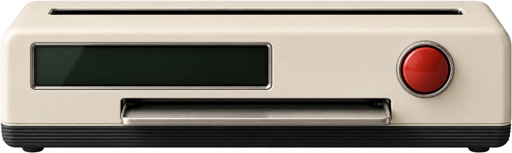

The printer and the printed sheet keep their colours in both modes.

Helen Hamlyn Centre Data Platform · 1 of 2Accessibility as the starting pointA printed sheet stays paper in dark mode: it is an object, like the printer.
不加第三个状态。只要你切回的那一种和系统一样，就自动清掉记住的选择，重新跟随系统。所以"点两次"就是"回到系统"。点完后图标下面出现一行小字说清楚现在的状态：Dark mode / until you switch back 或 Light mode / following your system（文案提案）。
读屏名
说它要做什么：Switch to dark mode / Switch to light mode，切换后的小字也会读出来。